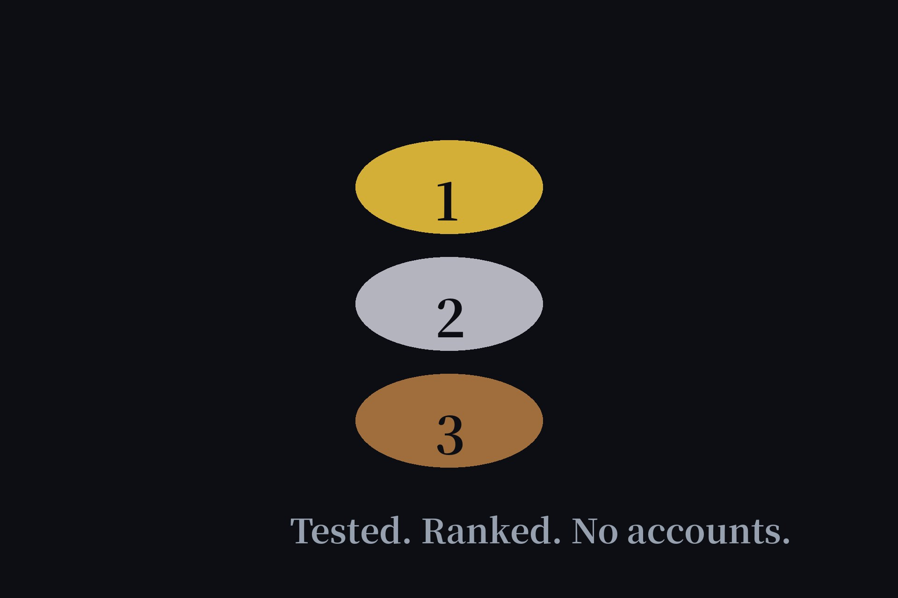

Best Free AI Agents Without Sign-Up, Ranked After Testing 11 (2026)
Our directory lists 11 verified no-signup AI agents — useful, but nobody wants to trial all eleven. So here's the shortlist: the five I'd actually recommend, ranked by how well they performed in our October hands-on re-test. Four earned Tier 1 (full task completed, zero account); the fifth is a fun pick with an honest caveat.

The ranking, up front
| # | Agent | Best for | Tier |
|---|---|---|---|
| 1 | Duck.ai | Private AI chat | Tier 1 |
| 2 | Andi | Conversational search | Tier 1 |
| 3 | Raphael AI | Unlimited image generation | Tier 1 |
| 4 | DeepAI | Quick image generation | Tier 1 |
| 5 | Perchance | Playful generators | Tier 2 |
1. Duck.ai — the safest default
DuckDuckGo's AI chat is the pick I'd hand to anyone. No account, and your identity is stripped before prompts reach the underlying providers — the only agent here with that privacy architecture. It completed every task in our October re-test without a single wall. If you want one no-signup AI chat bookmarked, make it this one. Full notes in our Duck.ai review.
2. Andi — for people who want answers, not chat
Andi isn't a chatbot; it's conversational search — you ask, it answers directly with source links, no ads. That format fits research-style questions better than any chat interface, and it passed the same zero-account test. Pick Andi when your question has a factual answer; pick Duck.ai when you want a conversation.
3. Raphael AI — unlimited images, no account
The standout in the image category: unlimited free text-to-image generation with no sign-up. Most "free" image tools ration you to a handful of credits; Raphael doesn't. Output quality won't match paid models, but for drafts, memes, and concept art it's the best free deal we verified.
4. DeepAI — the quick alternative
DeepAI's free image generation also passed with no account required. It ranks below Raphael on generosity, but it's fast and the interface stays out of your way. Worth knowing about when Raphael is slow — having two verified image options means you're never stuck.
5. Perchance — the fun pick (with a caveat)
Perchance is a playground of AI generators rather than one tool — character creators, image makers, text toys. It's Tier 2 in our directory, meaning it carries limits the top four don't, so treat it as entertainment first, utility second. Included because "best" shouldn't mean "only serious tools."
How I ranked them
Every agent here passed the same bar: opened in a private window, core task completed, no account, no email, no credit card — the standard described in our 12-chatbot test. Tier 1 means a full task completed cleanly; Tier 2 means it works but with limits worth knowing about. Anything that demanded sign-up mid-task failed outright and isn't on this page — see yesterday's wall-of-shame test for what failure looks like.
FAQ
What is the best free AI agent with no sign-up?
Duck.ai ranks first in our testing: DuckDuckGo's free AI chat needs no account, strips your identity before prompts reach providers, and completed every test task. Andi is the best pick if you want search-style answers instead of chat.
Are these really free, or is there a catch?
All five work anonymously with no account and no credit card. The trade-offs are usage caps and fewer model choices compared to paid tiers — not surprise paywalls. Anything that demanded sign-up mid-task failed our test and isn't listed.
How is this different from your agents directory?
The directory lists all 11 verified agents with Tier badges. This article is an opinionated shortlist: the five I'd actually recommend, ranked, with the reasoning for each pick.